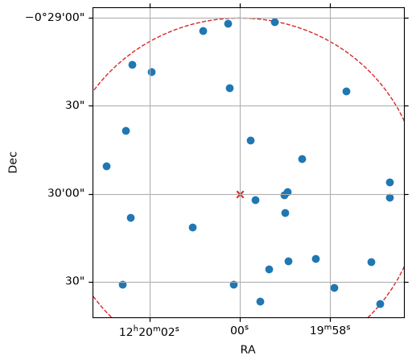
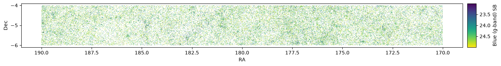
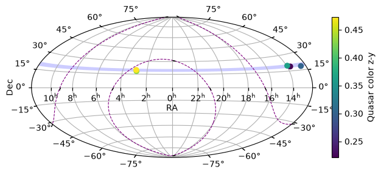

PanSTARRS “20 queries” using MAST’s TAP service: Filtering#
Overview#
This notebook is part of a series demonstrating how to address a set of scientific questions using SQL-like Astronomical Data Query Language (ADQL) queries via a Virtual Observatory standard Table Access Protocol (TAP) service at MAST.
This series aims to be an introduction to how complex queries can be executed using TAP (which might otherwise not be possible to specify with astroquery), and to be a resource for how to access MAST databases after the MAST CASJobs service is retired.
These queries are drawn from the 20 queries for SDSS as presented by Gray, Szalay, et al. (2002), adapted for the PanSTARRS PS1 database.
This notebook presents the subset of queries which are possible through filtering on column(s) using pre-specified criteria, including bitmask filtering for data quality cuts.
Learning Goals#
By the end of this tutorial, you will:
Understand how to design and perform filtering queries (with joins) using TAP services, by leveraging multiple ADQL “WHERE” constraints.
Table of Contents#
Introduction#
Welcome! This notebook shows how to query MAST’s PanSTARRS data using Astronomical Data Query Language (ADQL). We address three scientific questions by combining filtering constraints (including filtering on bitmasks for data quality cuts) using ADQL “WHERE” clauses. As you’ll see in our examples, MAST uses a standard Table Access Protocol (TAP) to handle these queries.
These queries are drawn from (or closely modeled on) the “20 queries for SDSS” presented by Gray, Szalay, et al. (2002). Taken as a whole, this collection provides worked examples on how to leverage relational database capabilities to answer scientific questions, with the aim of providing concrete starting points and references for designing queries for other research applications, both for PanSTARRS and other large data volume missions (including Roman).
Imports#
This tutorial makes use of the following libraries:
numpy for numerical calculations
pyvo for querying the MAST catalogs via TAP
matplotlib.pyplot for plotting data
time, datetime to determine query duration
astropy.coordinates.SkyCoord, astropy.wcs.WCS, astropy.visualization.wcsaxes Quadrangle, EllipticalFrame, astropy.units and regions.CircleSphericalSkyRegion, to visualize results’ locations and search regions on the sky.
import numpy as np
import pyvo as vo
import matplotlib.pyplot as plt
import datetime
import time
from astropy.coordinates import SkyCoord
from astropy import units as u
from astropy.wcs import WCS
from astropy.visualization.wcsaxes import Quadrangle
from astropy.visualization.wcsaxes.frame import EllipticalFrame
from regions import CircleSphericalSkyRegion
Connect to TAP service#
For all queries, we will be connecting to the PanSTARRS (PS1) Data release 2 (DR2) catalog. Specifically, we will use the ps1_dr2 catalogs available from the new postgres-backed TAP service, which offers improved performance relative to the legacy database (by factors of 100 or greater, in many cases).
See the PS1 documentation migration guide for information about the tables available with this new TAP service.
We begin by connecting to the MAST PanSTARRS DR2 TAP service.
(Note: See https://mast.stsci.edu/vo-tap/ for a full list of MAST TAP services.)
TAP_service = vo.dal.TAPService(
"https://mast.stsci.edu/vo-tap/api/v0.1/mast_catalogs"
)
Using the pyvo describe() method, we can access an overview of the methods, capabilities, and maximum result set size for this service.
TAP_service.describe()
Capability ivo://ivoa.net/std/TAP
Interface vs:ParamHTTP
https://mast.stsci.edu/vo-tap/api/v0.1/mast_catalogs
Language ADQL
ivo://ivoa.net/std/TAPRegExt#features-adqlgeo
CONTAINS
POINT
CIRCLE
ivo://edu.stsci.archive/std/exts#features-adql-bitwise
BIT_AND
The ampersand (&) operator performs a bitwise AND operation on two integer operands
BIT_OR
The vertical bar (|) operator performs a bitwise OR operation on two integer operands.
BIT_XOR
The circumflex (^) operator performs a bitwise XOR (exclusive or) operation on two integer operands.
BIT_NOT
The tilde (~) operator performs a bitwise NOT operation on an integer operand.
Output format application/json
Also available as json
Output format text/csv;header=present
Also available as csv
Output format application/xml
Also available as xml
Output format application/x-votable+xml
Also available as votable
Maximum size of resultsets
Default 100000 row
Maximum 100000 row
Capability ivo://ivoa.net/std/DALI#examples
Interface vr:WebBrowser
https://mast.stsci.edu/vo-tap/api/v0.1/mast_catalogs/examples
As expected, this service supports ADQL. You can also see the maximum result size is 100,000 rows.
Obtaining information about PanSTARRS catalogs#
In addition to the PanSTARRS DR2 catalogs documentation, we can search and explore information about the PS1 DR2 tables using MAST’s Catalog Schema Browser. This schema browser provides searchable listings of column names, units, and descriptions for the PS1 DR2 tables available via this TAP service. (The Catalog Schema Browser is also integrated within TIKE/RRN, and can be launched via its icon on the Launcher.)
We draw on this documentation and schema browser to identify the relevant tables & columns needed to address the queries below.
Q1#
Query 1 from Gray et al. (2002) poses:
Find all galaxies without saturated pixels within 1 arcminute of a given point
Q1: Constructing the query#
For this query, we will construct a cone search for galaxies around the point RA, Dec = (185, -0.5). We will use i band Kron and PSF magnitudes from the ps1_dr2.forced_mean_object table to separate galaxies from stars, and will use the i band bitflag column to filter out objects with bad measurement flags, as a proxy for saturation. This table also provides the RA/Dec positions for this cone search.
We will use
fmo.ifpsfmag - fmo.ifkronmag > 0.05
along with constraints on the i band PSF and Kron magnitudes being greater than zero (to filter out missing “-999” values) to select for galaxies (excluding point sources).
Next, we will enforce a maximum distance of 1 arcminute from our center position (185, -0.5).
Finally, we will add constraints that none of the flags “SECF_STAR_FEW”, “SECF_STAR_POOR”, “SECF_USE_SYNTH” (see the PS1 documentation) are set for the i band flags, to exclude bad measurements as a proxy for weeding out saturated sources.
We first obtain the sum of the above bitflag values from the object_info_flags TAP table, as this value will be used in constructing our sample query. (Note that it is more efficient to filter with bitflag math on the sum of all flag values to be excluded.)
We construct this bitflag sum query as below, submit it to the MAST TAP service (as a synchronous query, as this is a small table), and save the result for use later. (Note quotes are needed around the column name “value” as this is a ADQL reserved word.)
bad_flags_query = """
SELECT sum("value") as val_sum
FROM ps1_dr2.object_filter_flags
WHERE name='SECF_STAR_FEW'
OR name='SECF_STAR_POOR'
OR name='SECF_USE_SYNTH'
"""
TAP_results = TAP_service.run_sync(bad_flags_query)
bad_flags = int(TAP_results['val_sum'][0])
/home/runner/micromamba/envs/ci-env/lib/python3.13/site-packages/pyvo/dal/query.py:403: DALOverflowWarning: Results truncated due to server limits. Consider setting a maxrec value.
warn("Results truncated due to server limits. Consider "
Next we construct our query, implementing the constraints discussed above. We restrict our output to only object IDs, RA, Dec, and distance from our region center.
# Cone search center & radius
ra = 185.0
dec = -0.5
radius = 1/60. # 1 Arcmin, converted to degrees
adql_query = f"""
SELECT objid, ramean, decmean,
DISTANCE(POINT(ramean, decmean), POINT({ra}, {dec})) as dist -- compute distance from cone center
FROM ps1_dr2.forced_mean_object
WHERE CONTAINS(POINT(ramean, decmean), CIRCLE({ra}, {dec}, {radius}))=1 -- contained within cone region
and (ifpsfmag > 0) and (ifkronmag > 0) -- restrict to objects with measured i PSF and Kron mags
and (ifpsfmag - ifkronmag > 0.05) -- extended sources (galaxies)
and (iflags & {bad_flags})=0 -- require no bad flags to be set
"""
Next, we submit this query to the TAP service.
start = time.time()
job = TAP_service.run_async(adql_query)
end = time.time()
print(f"Elapsed time: {str(datetime.timedelta(seconds=end-start))}")
Elapsed time: 0:00:01.229303
This query is fast, taking only ~1 second and returns 28 rows.
Q1: Inspecting & visualizing the results#
To inspect our results, we can use the .to_table() method for easy viewing.
TAP_results = job.to_table()
TAP_results
| objid | ramean | decmean | dist |
|---|---|---|---|
| deg | deg | ||
| int64 | float64 | float64 | float32 |
| 107401850105587592 | 185.01055711 | -0.49403067 | 0.0121275345 |
| 107391850044046642 | 185.00435549691466 | -0.5031511304051519 | 0.0053757345 |
| 107401849943024240 | 184.99426271 | -0.49668996 | 0.006623471 |
| 107381849913699782 | 184.99131361217238 | -0.5088958440008815 | 0.012433162 |
| 107391849973111893 | 184.99731084 | -0.50710926 | 0.007600829 |
| 107421849968450037 | 184.99684607 | -0.48365612 | 0.016645389 |
| 107411850081954353 | 185.00820236 | -0.48840344 | 0.01420401 |
| 107411850034009001 | 185.00339933 | -0.48451875 | 0.015850037 |
| 107401849861731741 | 184.98617283 | -0.49890671 | 0.013869802 |
| ... | ... | ... | ... |
| 107391849930562864 | 184.99301975 | -0.50616058 | 0.009309827 |
| 107401850122743582 | 185.01231702 | -0.49738741 | 0.012590596 |
| 107401849861630022 | 184.9861644 | -0.50033637 | 0.013839161 |
| 107411850099285185 | 185.00993039 | -0.4877033 | 0.01580551 |
| 107391850006220290 | 185.0006271682883 | -0.5085641867459418 | 0.008587118 |
| 107381849872068053 | 184.98712178 | -0.51038626 | 0.016544186 |
| 107391849956782922 | 184.99555868 | -0.50637256 | 0.007767453 |
| 107411849902192141 | 184.99021906 | -0.49024021 | 0.013817132 |
| 107401849959400261 | 184.99594007 | -0.50014067 | 0.0040622116 |
The selected galaxies have distances between 0.089 and 0.999 arcmin from the search position, as we calculate below (converting the distances to arcmin, from the result unit of degrees).
# Convert from distances in degrees to arcmin
print(f"Min distance = {TAP_results['dist'].min()*60:0.3f} arcmin")
print(f"Max distance = {TAP_results['dist'].max()*60:0.3f} arcmin")
Min distance = 0.089 arcmin
Max distance = 0.999 arcmin
To visualize our results, we plot the result galaxies’ positions along with the search region center and boundary.
# Define search position & region:
search_pos = SkyCoord(ra * u.deg, dec * u.deg)
cone_region = CircleSphericalSkyRegion(search_pos, radius * u.deg)
# Create a WCS instance for plotting the search region
wcs = WCS({'naxis': 2,
'crpix1': 50, # Pixel center
'crpix2': 50,
'crval1': ra, # RA/Dec center
'crval2': dec,
'cdelt1': -1/3600, # Pixel scale: 1 arcsec in degrees
'cdelt2': 1/3600,
'ctype1': 'RA---TAN', # Projection type
'ctype2': 'DEC--TAN'})
# Create figure & axis
fig = plt.figure(figsize=(5, 5))
ax = fig.add_subplot(projection=wcs)
ax.grid(True)
ax.set_xlabel("RA")
ax.set_ylabel("Dec")
# Plot search region boundary
cone_region.to_pixel(
wcs=wcs,
boundary_distortions=True,
).plot(ax=ax, color="tab:red", ls="--")
# Plot search center, using astropy wcsaxes scatter_coord() method:
ax.scatter_coord(
search_pos, marker="x", color="tab:red"
)
# Plot results
coo_results = SkyCoord(TAP_results["ramean"], TAP_results["decmean"], unit="deg")
ax.scatter_coord(coo_results)
# Update limits:
ax.relim()

We see the selected galaxies are randomly distributed within our search region, with no galaxies in the southernmost portion of the search region (which is not unexpected, given there are voids / underdense regions of universe).
Q2#
Following Gray et al. (2002), Query 2 poses:
Find all galaxies with blue surface brightness between 23 and 25 magnitude per square second, and super galactic latitude (sgb) between (-10\(^{\circ}\), 10\(^{\circ}\)), and declination less than zero.
Q2: Constructing the query#
For this query, we will determine surface brightnesses in the g band (the bluest PanSTARRS filter) using the Kron magnitude from the ps1_dr2.forced_mean_object table. Object positions (necessary for the RA coordinate restriction) are also available in this table (with the updated PS1 DR2 TAP service).
It is necessary to join to the ps1_dr2.stack_object table to obtain the Kron radii, which are used in the surface brightness calculation.
For simplicity, we will also use ramean as a proxy instead of using the super-galactic coordinate. (Note that Gray et al. do the same.)
First, we will use
fmo.gfpsfmag - fmo.gfkronmag > 0.05
to select for galaxies (excluding point sources), along with a cut for PSF and Kron magnitudes being greater than 0 (to exclude missing -999 values).
Next, we will include constraints to enforce:
the RA range
the Dec limit
the blue surface brightness range
We additionally will add a constraint on the stack_object.primarydetection key to remove duplicate entries, as stack_object contains duplicates of the same object measured in overlapping regions in the stack images.
To perform quality control, we will also add a constraint that the object info flags do not have the “BAD_STACK” flag set.
Finally, to ensure we limit the query to less than the maximum number of entries for a single TAP query, we will further restrict the spatial coverage of this query to -6\(^{\circ}\)\(\lesssim\) decmean \(\lesssim\)-4 \(^{\circ}\). Here we specify this by restricting the PanSTARRS objids to be between 100800000000000000 and 103200000000000000 (as the first 5 digits of PanSTARRS object identifiers are determined from floor((decl+90)/0.00833333)).
To begin, we obtain the “BAD_STACK” bitflag value from the object_info_flags TAP table, as this value will be used in constructing our sample query.
We construct this bitflag value query as below, submit it to the MAST TAP service (as a synchronous query, as this is a small table), and save the bitflag value to a variable for use later. (Note quotes are needed around the column name “value” as this is a ADQL reserved word.)
bad_stack_query = """
SELECT "value"
FROM ps1_dr2.object_info_flags
WHERE name='BAD_STACK'
"""
TAP_results = TAP_service.run_sync(bad_stack_query)
bad_stack = int(TAP_results['value'][0])
/home/runner/micromamba/envs/ci-env/lib/python3.13/site-packages/pyvo/dal/query.py:403: DALOverflowWarning: Results truncated due to server limits. Consider setting a maxrec value.
warn("Results truncated due to server limits. Consider "
We next translating the selection declination limit range into a range of objids for our query constraint, following the PS1 object identifiers schema.
# Determine the objid range corresponding to the selected declination range.
declstart = -6
declend = -4
objidstart = int(np.floor((declstart+90)/0.00833333))
objidend = int(np.floor((declend+90)/0.00833333))
We then construct our query by combining the constraints discussed above. Our output is restricted to a select subset of columns and the derived \(g\)-band surface brightness.
adql_query = f"""
SELECT fmo.objid, fmo.gfkronmag,
fmo.gfkronmag + 2.5*log10(PI()*POWER(so.gkronrad,2)) AS gsurfmag,
fmo.ramean, fmo.decmean
FROM ps1_dr2.forced_mean_object as fmo
JOIN ps1_dr2.stack_object AS so ON
fmo.objid=so.objid
WHERE ((fmo.gfkronmag > 0) AND (fmo.gfpsfmag > 0) AND
(fmo.gfpsfmag - fmo.gfkronmag > 0.05)) -- galaxies
AND fmo.ramean BETWEEN 170 AND 190 -- ra substitute for super-gal coords
AND fmo.decmean < 0
AND fmo.gfkronmag + 2.5*log10(PI()*POWER(so.gkronrad,2))
BETWEEN 23 AND 25 -- mag per sq arcsec
AND so.primarydetection = 1 -- primary detection in stack_object
AND (so.objinfoflag & {bad_stack})=0 -- bitflag check that the "bad_stack" flag is NOT set
AND fmo.objid >= {objidstart}0000000000000 -- select decl >=-30, <-28
AND fmo.objid < {objidend}0000000000000
"""
As before, we submit this query to the TAP service.
start = time.time()
job = TAP_service.run_async(adql_query)
end = time.time()
print(f"Elapsed time: {str(datetime.timedelta(seconds=end-start))}")
Elapsed time: 0:02:00.424857
This query takes about 45 seconds and returns 68,460 rows. For the entire declination range chunked by objid — 15 total chunks, from PanSTARRS’ southern coverage limit at Decl=-30 to Decl=0 — this would thus take ~11 minutes (over all chunks) and return ~1.03 million rows.
Q2: Inspecting & visualizing the results#
We again inspect our results, using the .to_table() method.
TAP_results = job.to_table()
TAP_results
| objid | gfkronmag | gsurfmag | ramean | decmean |
|---|---|---|---|---|
| mag | deg | deg | ||
| int64 | float32 | float32 | float64 | float64 |
| 100811782343628437 | 20.9238 | 24.628723 | 178.23432706868934 | -5.984961142807564 |
| 100811893179413436 | 20.675 | 24.38683 | 189.3178268904874 | -5.989102157148442 |
| 100821710051949110 | 20.6036 | 24.525824 | 171.00516646360794 | -5.976087584617399 |
| 100821744375309676 | 20.8168 | 24.569117 | 174.4374963100457 | -5.975665627229034 |
| 100821874545481383 | 19.7664 | 24.394455 | 187.4545296132549 | -5.9825089102900915 |
| 100831870347370439 | 21.7233 | 24.992258 | 187.03472539266002 | -5.974847817519437 |
| 100831891217079285 | 20.7411 | 24.439936 | 189.12170501794662 | -5.967569798174474 |
| 100841737819352247 | 20.2631 | 24.510508 | 173.78190128261423 | -5.9651630890735206 |
| 100841875696168952 | 18.4403 | 24.563753 | 187.56952963990494 | -5.959512317285222 |
| ... | ... | ... | ... | ... |
| 103111748553211201 | 19.9047 | 24.065664 | 174.85535743117734 | -4.074306957406374 |
| 103111791926593006 | 21.5014 | 24.865416 | 179.192635025957 | -4.072776576670172 |
| 103111872291303248 | 17.3778 | 23.064491 | 187.22912863048435 | -4.072650962534072 |
| 103121708246228908 | 20.8352 | 24.62774 | 170.8246777071539 | -4.059573815120618 |
| 103141701092804405 | 19.907 | 23.95866 | 170.10927257683846 | -4.0467500051408285 |
| 103141878561869215 | 20.7447 | 24.625086 | 187.85620452180618 | -4.042687448680715 |
| 103161715362252914 | 21.3564 | 24.997986 | 171.53620602023983 | -4.0312403925453095 |
| 103161820707085636 | 20.0208 | 23.890726 | 182.07067220239887 | -4.028980343771568 |
| 103191801116609098 | 20.732 | 24.317543 | 180.11164288921233 | -4.001136873058473 |
To visualize our results, we show a scatter plot of the selected galaxies’ positions (RA/Dec), colored by their \(g\)-band surface brightness.
# Visualize selected galaxies with a scatter plot, by blue surface brightness:
f, ax = plt.subplots(figsize=(14, 7), layout="compressed")
pts = ax.scatter(
TAP_results['ramean'], TAP_results['decmean'],
s=0.4, lw=0,
c=TAP_results['gsurfmag'],
cmap='viridis',
)
ax.set_xlim(ax.get_xlim()[::-1]) # Invert RA axis
ax.set_xlabel("RA")
ax.set_ylabel("Dec")
ax.set_aspect(1.0)
cbar = f.colorbar(pts, aspect=5, pad=0.01)
cbar.set_label("Blue (g-band) SB")
cbar.ax.invert_yaxis() # Invert color bar axis: surface brightness

We see our sample covers the full query spatial area, with some regions of clustering with multiple galaxies with brighter g-band surface brightnesses (e.g., at approximately (173.9, -5.8)), as we’d expect for the large scale structure of the universe.
Q16#
Query 16 poses:
Find all objects similar to the colors of a quasar at 5.5<redshift<6.5.
As PanSTARRS and SDSS have different available bands/data, our PanSTARRS will differ in specifics from the SDSS query presented by Gray et al., but the ideas are similar.
Here, we will use the criteria of Banados et al. (2016) to select select 5.7 < z < 6.2 quasars using the i-dropout approach (see section 2.1.1 in that paper). The procedure is roughly:
Select stellar objects with
zband magnitude < 21 and abs(Galactic latitude) > 30Require both PSF and Kron
zmagnitudes be availableRequire multiple
nzandnydetections.Apply color cuts as in Banados et al.
I’m using the MeanObjectView table rather than ForcedMeanObject because it has more accurate information on magnitudes. But then it also checks the ForcedMeanObject magnitudes to confirm the very red colors.
Q16: Constructing the query#
For this query, we will be using PSF and Kron magnitudes in multiple bands. We will use the ps1_dr2.mean_object table, as this the most accurate magnitude information for our purposes.
We will also join to the ps1_dr2.forced_mean_object table, to confirm the select objects have very red colors.
First, we will use
fmo.zmeanpsfmag - fmo.zmeankronmag < 0.05
to select point sources, as quasars will not appear to be spatially extended; we will also use cuts for PSF and Kron magnitudes to exclude missing values.
We will also introduce constraints on:
At least 2 detections for both
zandybands (and over all bands)Ensuring
yPSF magnitudes are available.Absolute value of Galactic latitude > 30 (avoiding the impact of foreground dust from Galaxy to ensure objects are intrinsically reddened)
Magnitude & color cuts as in Banados et al. (2016), with PSF magnitude colors, from both the
mean_objectandforced_mean_objecttables:zmagnitude < 21z-y< 0.5i-z> 2.2, or noimagnitude availabler-z> 2.2, or normagnitude availableg-z> 2.2, or nogmagnitude available
To perform quality control, we will also add a constraint that the object info flags do not have the “BAD_STACK” flag set.
Finally, to ensure the query does not exceed the time or maximum row limit for a single TAP query, we further restrict this query to PanSTARRS slice 16 (by requiring objid to be between 129500000000000000 and 133500000000000000).
To begin, we obtain the “BAD_STACK” bitflag value from the object_info_flags TAP table, as this value will be used in constructing our sample query.
We construct this bitflag value query as below, submit it to the MAST TAP service (as a synchronous query, as this is a small table), and save the bitflag value to a variable for use later. (Note quotes are needed around the column name “value” as this is a ADQL reserved word.)
bad_stack_query = """
SELECT "value"
FROM ps1_dr2.object_info_flags
WHERE name='BAD_STACK'
"""
TAP_results = TAP_service.run_sync(bad_stack_query)
bad_stack = int(TAP_results['value'][0])
Next we construct our query based on the constraints above, restricting the output to the columns used in the query constraints.
adql_query = f"""
select mo.objID, mo.raMean, mo.decMean, mo.b as glat,
fmo.gFPSFMag as gFMO, fmo.rFPSFMag as rFMO, fmo.iFPSFMag as iFMO,
fmo.zFPSFMag as zFMO, fmo.yFPSFMag as yFMO,
mo.gMeanPSFMag as gMean, mo.rMeanPSFMag as rMean, mo.iMeanPSFMag as iMean,
mo.zMeanPSFMag as zMean, mo.yMeanPSFMag as yMean,
mo.zMeanKronMag as zMeanKron
from ps1_dr2.mean_object as mo
join ps1_dr2.forced_mean_object as fmo on fmo.objID=mo.objID
where mo.nDetections>2 and mo.nz>2 and mo.ny>2
and (mo.zMeanPSFMag > 0) -- exclude -999 mags (non-detections)
and (mo.yMeanPSFMag > 0)
and (mo.zMeanKronMag > 0)
and (mo.zMeanPSFMag < 21)
and (mo.zMeanPSFMag-mo.zMeanKronMag < 0.05) -- stellar objects
and (abs(mo.b) > 30) -- avoid galactic plane
-- red color selection
and (mo.zMeanPSFMag-mo.yMeanPSFMag < 0.5)
and (mo.iMeanPSFMag-mo.zMeanPSFMag > 2.2 or mo.iMeanPSFMag < 0)
and (mo.rMeanPSFMag-mo.zMeanPSFMag > 2.2 or mo.rMeanPSFMag < 0)
and (mo.gMeanPSFMag-mo.zMeanPSFMag > 2.2 or mo.gMeanPSFMag < 0)
-- require confirming FMO colors
and (fmo.zFPSFMag > 0)
and (fmo.yFPSFMag > 0)
and (fmo.zFPSFMag-fmo.yFPSFMag < 0.5)
and (fmo.iFPSFMag-fmo.zFPSFMag > 2.2 or fmo.iFPSFMag < 0)
and (fmo.rFPSFMag-fmo.zFPSFMag > 2.2 or fmo.rFPSFMag < 0)
and (fmo.gFPSFMag-fmo.zFPSFMag > 2.2 or fmo.gFPSFMag < 0)
and (mo.objInfoFlag & {bad_stack})=0 -- quality flags
and mo.objID between 129500000000000000 and 133500000000000000 -- select just slice 16
"""
As is now familiar, we submit this query to the TAP service.
start = time.time()
job = TAP_service.run_async(adql_query)
end = time.time()
print(f"Elapsed time: {str(datetime.timedelta(seconds=end-start))}")
Elapsed time: 0:03:08.589805
This query takes about 1.75 minutes, and returns only 5 rows (as this sort of object is rare). For all 32 PanSTARRS slices, this would take a total time of ~1 hour and return ~160 rows.
Q16: Inspecting & visualizing the results#
Once again, we inspect our results using the .to_table() method.
TAP_results = job.to_table()
TAP_results
| objid | ramean | decmean | glat | gfmo | rfmo | ifmo | zfmo | yfmo | gmean | rmean | imean | zmean | ymean | zmeankron |
|---|---|---|---|---|---|---|---|---|---|---|---|---|---|---|
| deg | deg | deg | mag | mag | mag | mag | mag | mag | mag | mag | mag | mag | mag | |
| int64 | float64 | float64 | float64 | float32 | float32 | float32 | float32 | float32 | float32 | float32 | float32 | float32 | float32 | float32 |
| 130090428844060494 | 42.884481104081026 | 18.408368992688203 | -35.953916686997324 | 22.9579 | 21.8512 | -999.0 | 19.4273 | 18.9801 | -999.0 | 21.7816 | -999.0 | 19.4265 | 18.9967 | 19.6132 |
| 131780434379024877 | 43.43789140827948 | 19.82027162990699 | -34.48703801848827 | 23.9816 | 22.0053 | -999.0 | 19.2398 | 18.7975 | -999.0 | 21.7831 | -999.0 | 19.2334 | 18.7608 | 19.3297 |
| 129931882774707401 | 188.27737954317203 | 18.280743873308126 | 80.19742070697532 | 24.299 | 22.8054 | 23.4155 | 20.1072 | 20.0403 | -999.0 | -999.0 | -999.0 | 20.0507 | 19.7503 | 20.0774 |
| 130842051682935386 | 205.16820924703407 | 19.03721903846187 | 76.09764700783732 | -999.0 | -999.0 | 21.9279 | 15.9134 | 16.4691 | -999.0 | -999.0 | -999.0 | 15.5135 | 15.2925 | 15.5664 |
| 131992088859166914 | 208.88588053106608 | 19.996983771586695 | 73.69076520340639 | -999.0 | 20.8687 | -999.0 | 18.5453 | 18.1299 | -999.0 | 20.877 | -999.0 | 18.5323 | 18.1691 | 18.6117 |
We’ll now visualize these results by plotting the quasars’ positions across the sky, coloring the points by their z-y color. We overplot a band showing the latitude range of slice 16 (roughly from +17.91 to +21.25 degrees declination).
# Create a SkyCoord from the results for plot processing:
sample_coos = SkyCoord(TAP_results["ramean"], TAP_results["decmean"])
# Create a WCS instance for plotting the results
wcs = WCS({'naxis': 2,
'naxis1': 324,
'naxis2': 162,
'crpix1': 162.5,
'crpix2': 81.5,
'cdelt1': -1,
'cdelt2': 1,
'ctype1': 'RA---AIT',
'ctype2': 'DEC--AIT'})
# Create figure & axis
f = plt.figure(figsize=(8, 3))
ax = f.add_subplot(projection=wcs, frame_class=EllipticalFrame)
ax.grid(True)
ax.set_xlabel("RA")
ax.set_ylabel("Dec")
# Modify the grid
lon, lat = ax.coords
lon.set_ticks(spacing=30*u.deg)
lon.grid()
lat.set_ticks(spacing=15*u.deg)
lat.grid()
# # Manually set the plot limits to show the entire sphere
ax.set_xlim(-0.5, 324-0.5)
ax.set_ylim(-0.5, 162-0.5)
ax.set_aspect(1.)
# Plot results:
pts = ax.scatter_coord(
sample_coos,
c=(TAP_results["zmean"] - TAP_results["ymean"]),
zorder=10,
)
# Overlay lines of +-30 degree Galactic latitude
galactic_plane = ax.get_coords_overlay('galactic')
galactic_plane[1].set_ticks(np.array([-30, 30])*u.deg)
galactic_plane[1].grid(color='purple', ls='dashed')
galactic_plane[0].set_ticks_visible(False)
# Declination range of slice 16
slice_lims = [17.91, 21.25]
q = Quadrangle((-180, slice_lims[0])*u.deg, 360*u.deg,
(slice_lims[1]-slice_lims[0])*u.deg,
facecolor='blue', alpha=0.2,
transform=ax.get_transform('icrs'))
ax.add_patch(q)
cbar = f.colorbar(pts, fraction=0.02, location="right")
cbar.set_label("Quasar color z-y")

We see that indeed these objects are very spread out across the sky, though the constraint that objects must be more than 30 degrees off the Galactic plane removes a large swath of the slice 16 from consideration.
Conclusions#
These queries demonstrate how to leverage MAST’s PS1 TAP service to select objects using ADQL queries, including bit math filtering to perform data quality cuts using bitmask flags. MAST’s new, more performant PS1 TAP service executes these specific queries up to ~3 times faster than possible with MAST’s CASJobs service. (Depending on the set of constraints specified, this service can have even greater speedups.)
See the full MAST PanSTARRS tutorial list for more tutorials demonstrating how to access PanSTARRS catalogs and other select “20 queries” examples.
Additional Resources#
Table Access Protocol#
IVOA standard for RESTful web service access to tabular data
http://www.ivoa.net/documents/TAP/
PanSTARRS 1 DR 2#
https://outerspace.stsci.edu/display/PanSTARRS/
Astronomical Query Data Language (2.0)#
IVOA standard for querying astronomical data in tabular format, with geometric search support
http://www.ivoa.net/documents/latest/ADQL.html
PyVO#
an affiliated package for astropy
find and retrieve astronomical data available from archives that support standard IVOA virtual observatory service protocols.
https://pyvo.readthedocs.io/en/latest/index.html
Full list of MAST/TAP services#
A full list of available MAST TAP services can be found at:
https://mast.stsci.edu/vo-tap
Citations#
If you use astropy for published research, please cite the
authors. Follow these links for more information about citing astropy:
If you use PanSTARRS data accessed through MAST for published research, please include the following acknowledgements, found at the following links:
About this Notebook#
Authors Rick White, Sedona Price
Keywords: Tutorial, TAP, pyvo, ADQL, PanSTARRS
Last Updated: October 2026